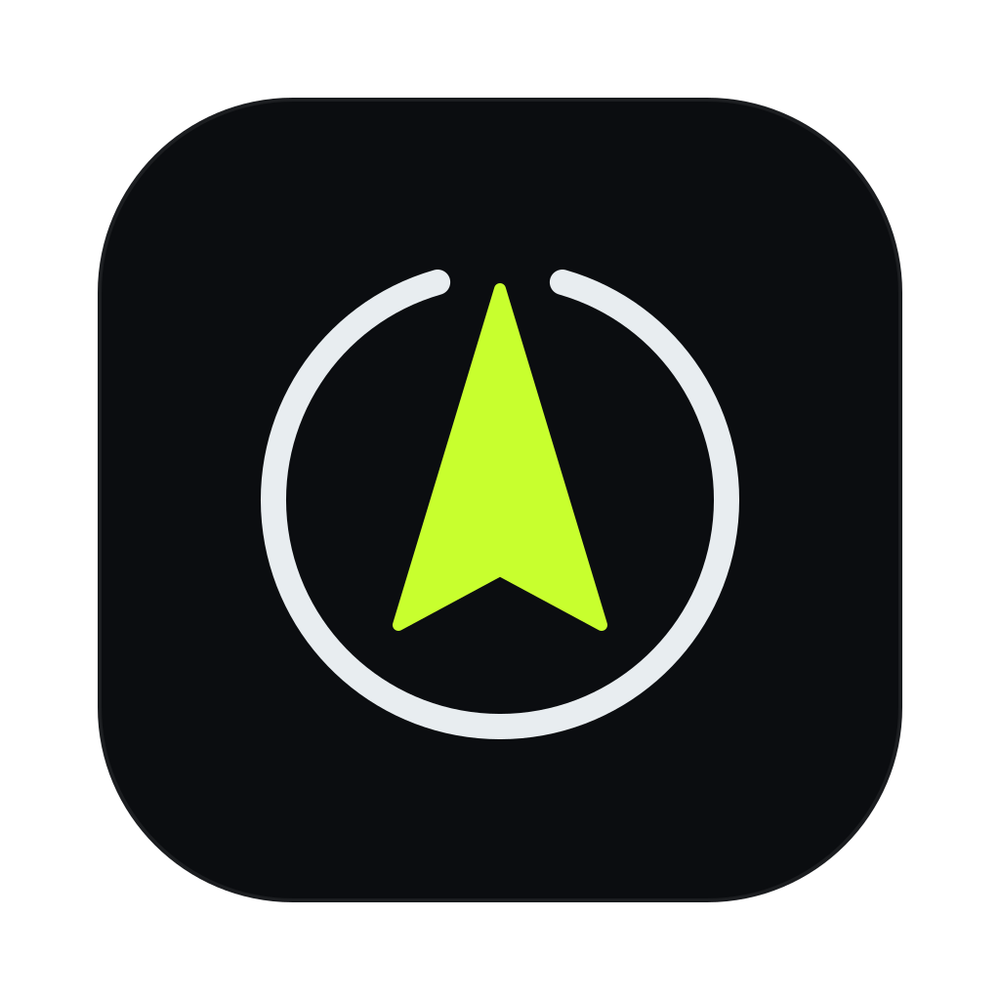

PilothouseSupport
Use Pilothouse from your phone or another computer
- On the computer: Pilothouse → Settings → Remote control. Turn it on; a QR code appears.
- Scan it with your phone’s camera (opens usepilothouse.com/app), or with the Pilothouse iPhone app. On another computer, click Open in browser or Copy link and open it there.
- That device is paired. The code works once and expires after 10 minutes; Settings shows a fresh one.
No account and no Tailscale needed: the connection goes through the Pilothouse relay, end-to-end encrypted. If you use Tailscale, the iPhone app can pair over it instead (the iPhone app tab in Settings).
Windows says “Windows protected your PC”
Pilothouse for Windows isn’t code-signed yet (a signing certificate costs money every year, and Pilothouse is free), so SmartScreen warns about any new app it doesn’t know. To install it:
- In the blue “Windows protected your PC” window, click More info.
- Check that it says App: Pilothouse-Setup-x64.exe, then click Run anyway.
It asks only the first time. Download Pilothouse only from usepilothouse.com or the GitHub releases page; the code that builds it is public on GitHub. The Mac version is signed and notarized by Apple, so macOS doesn’t ask.
“Your computer is offline” / “Cannot reach your computer”
- The computer must be awake, with Pilothouse open and Remote control on. Settings shows “Reachable from the web” when the relay connection is up.
- Over Tailscale: Tailscale must be connected on both devices.
- Still stuck? Turn Remote control off and on in Settings.
Several computers
Scan the QR of each computer with the same browser: the web app shows all their agents in one list, labelled by computer. Forget removes one.
Share a view-only link
Settings → Remote control → Share view-only link. Whoever opens it can watch your agents but cannot type, approve or open anything. It works once, for 10 minutes; remove them under Paired devices.
Remove a device
Pilothouse → Settings → Remote control → Paired devices → Remove. Or: in the web app, Forget; on the iPhone, Settings → Unpair this iPhone.
Run agents on a server
Pilothouse server runs agents on a Linux box, a VPS or a Mac mini without a window; you pair and answer the same way. See server/README.
Usage is empty for Claude Code
It appears after a Claude tab opened from Pilothouse has run once. If you set your own Claude Code status line, Pilothouse leaves it alone and can’t show Claude’s limits.
Report a problem or ask a question
Open an issue on GitHub or email aemresrbyk@gmail.com. Security problems: please email instead of opening a public issue.